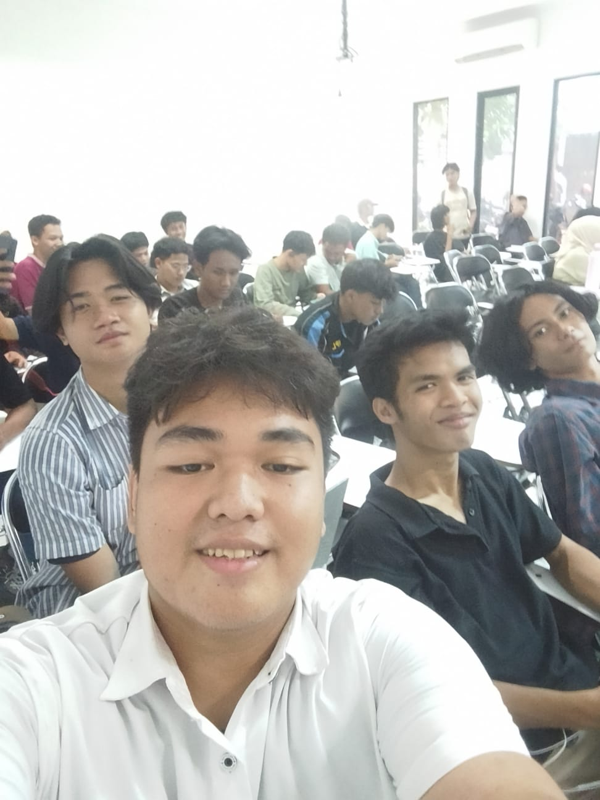

Halo, saya Alrasya Devendra, mahasiswa Teknik Informatika di STT Terpadu Nurul Fikri (STT NF). Saya mempelajari dasar-dasar komputasi, pemrograman, dan teknologi informasi.
Sebagai mahasiswa, saya terus mengembangkan pengetahuan dan keterampilan di bidang informatika melalui perkuliahan dan berbagai latihan. Saya berharap dapat menerapkan ilmu yang dipelajari untuk membuat solusi teknologi yang bermanfaat.